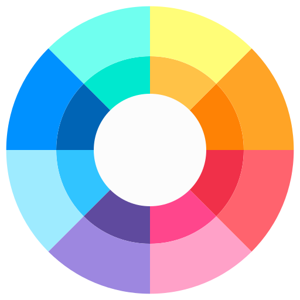

<mat-drawer-container class="dashboard-container" autosize>

    <div class="toolbar-content">

        <div class="container">
            <mat-toolbar class="toolbar">
                <button
                    mat-icon-button class="icon" aria-label="Example icon-button with menu icon">
                    
                </button>
                <span>Cromacraft</span>
            </mat-toolbar>
            <div class="menu-principal">
                <mat-list class="lista"  role="list">
                    <a class="lista-iten"
                    #coloresLink="routerLinkActive"
                    routerLinkActive
                    [activated]="coloresLink.isActive"
                    routerLink="colores"
                    mat-list-item>Colores</a>
    
                    <a class="lista-iten"
                    #gradientesLink="routerLinkActive"
                    routerLinkActive
                    [activated]="gradientesLink.isActive"
                    routerLink="gradientes"
                    mat-list-item>Gradientes</a>
                    
                    <a class="lista-iten"
                    #fuentesLink="routerLinkActive"
                    routerLinkActive
                    [activated]="fuentesLink.isActive"
                    routerLink="fuentes"
                    mat-list-item>Fuentes</a>
                </mat-list>
            </div>
        </div>

        <div>
            <router-outlet></router-outlet>
        </div>
    </div>

    


    <footer>
        <div class="flex align-content-end justify-content-center flex-wrap " > 
            <h4 class="">
                Sitio web creado por braian kandyba©
            </h4>
        </div>
    </footer>
</mat-drawer-container>

